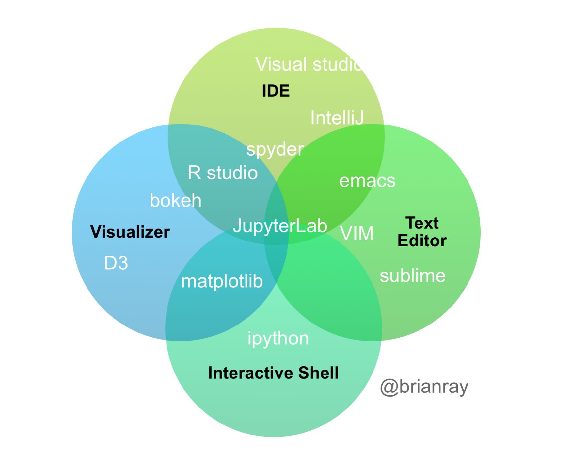

RStudio vs JupyterLab
For Data Science
Dhananjay Deshpande
Oct 28, 2019
Many Data Science Tools Exist

What Tools should I choose as a Data Scientist?
Hard question. So many options !!
Lets compare a couple of popular Integrated Development Environments
An integrated development environment for R, with a console, syntax-highlighting editor that supports direct code execution, and tools for plotting, history, debugging and workspace management.
https://rstudio.comAn integrated development environment that enables you to work with documents and activities such as Jupyter notebooks, text editors, terminals, and custom components in a flexible, integrated, and extensible manner.
Enhanced version of Jupyter Notebook.
https://jupyterlab.readthedocs.ioRStudio Desktop: program is run locally as a regular desktop application.
RStudio Server: allows accessing RStudio using a web browser while it is running on a remote Linux server.
referenceJupyter Notebook: an open-source web application for data science.
JupyterLab: An interactive development environment that includes support for Jupyter Notebook.
referenceInitial version released: 28 Feb 2011
License: Open Source (AGPL v3)
Original Developer: R Studio, Inc
referenceBeta Version released: Feb 20, 2018 (Jupyter Notebook: 2015, IPython: 2001)
License: Open Source (MIT)
Original Developer: Project Jupyter
referenceBest for R.
knitr can execute code in many languages besides R. Some of the available language engines include:
Best for Python.
The Jupyter system supports over 100 programming languages (called “kernels” in the Jupyter ecosystem) including
To Install RStudio on Mac
With conda
$ conda install -c conda-forge jupyterlab
With pip
$ pip install jupyterlab
Run JupyterLab
$ jupyter lab
| Feature | RStudio | JupyterLab |
|---|---|---|
| Seperation between text and code | No | Yes |
| Markdown, Latex, Image, Visualization support | Yes | Yes |
| Syntax Highlighting | Supported | Supported (Large Number of Languages) |
| Function help | Yes | Possible with Extensions |
| Keyboard bindings for vim, emacs | Yes | Yes |
| Feature | RStudio | JupyterLab |
|---|---|---|
| Debugging | Yes | No (Supported in Classic Notebook) |
| Documentation and Help | Available | Available |
| Support for Extensions | Yes | Yes |
| Themes | Yes | Yes |
| Feature | RStudio | JupyterLab |
|---|---|---|
| File Explorer | Yes | Yes |
| File formats supported | csv, xls, xlsx, sav, dta, por, sas, stata | csv, json |
| Pagination for Data Frames | Yes | No |
| Feature | RStudio | JupyterLab |
|---|---|---|
| Notebook support | Yes | Yes |
| Descriptive Analysis Support | Yes | Yes |
| Spatial Analysis Support | Yes | Yes |
| Temporal Analysis Support | Yes | Yes |
| Variable Comparative Analysis Support | Yes | Yes |
| Feature | RStudio | JupyterLab |
|---|---|---|
| Interactive Visualization support | Yes | Yes |
| Feature | RStudio | JupyterLab |
|---|---|---|
| Integration with Tensorflow | Yes | Yes |
| Integration with PyTorch | Yes | Yes |
| Integration with Stan | Yes | Yes |
| Integration with Slurm | Yes | Yes |
| Feature | RStudio | JupyterLab |
|---|---|---|
| Export formats | html, pdf, md, word (with knitr) | html, pdf, md, json |
| D3 Integration | Yes | Yes |
| Presentation mode support | Yes | Yes |
| Website, blog creation | Yes | Yes |
| Publish A Book | Yes | Yes |
| Feature | RStudio | JupyterLab |
|---|---|---|
| Integration with Git | Yes | Yes |
| Google Drive Integration | Yes | Yes |
| Dropbox Integration | Yes | Yes |
| Collaboration on the cloud | Yes | Yes |
As of Oct 28, 2019